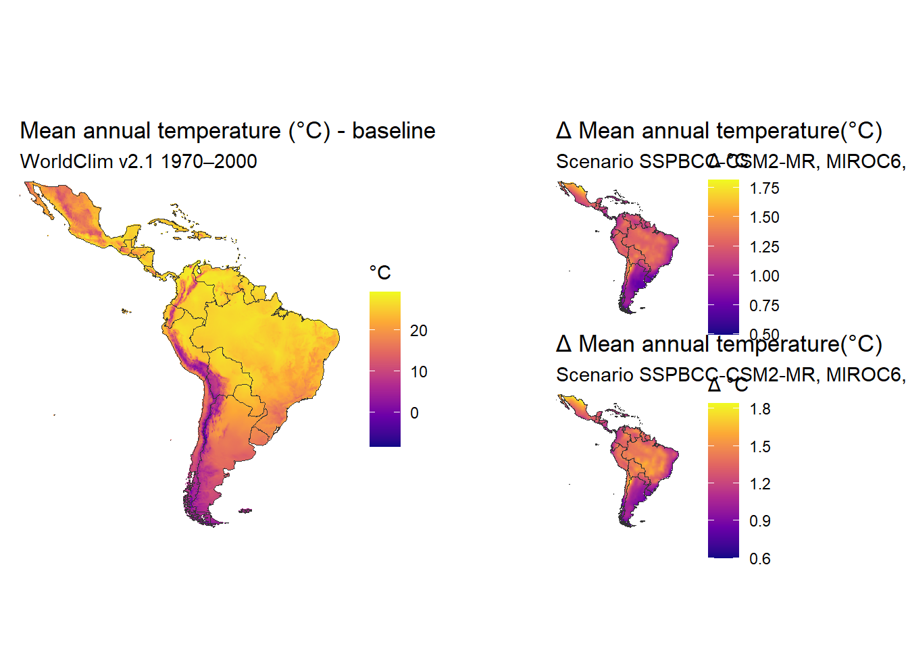
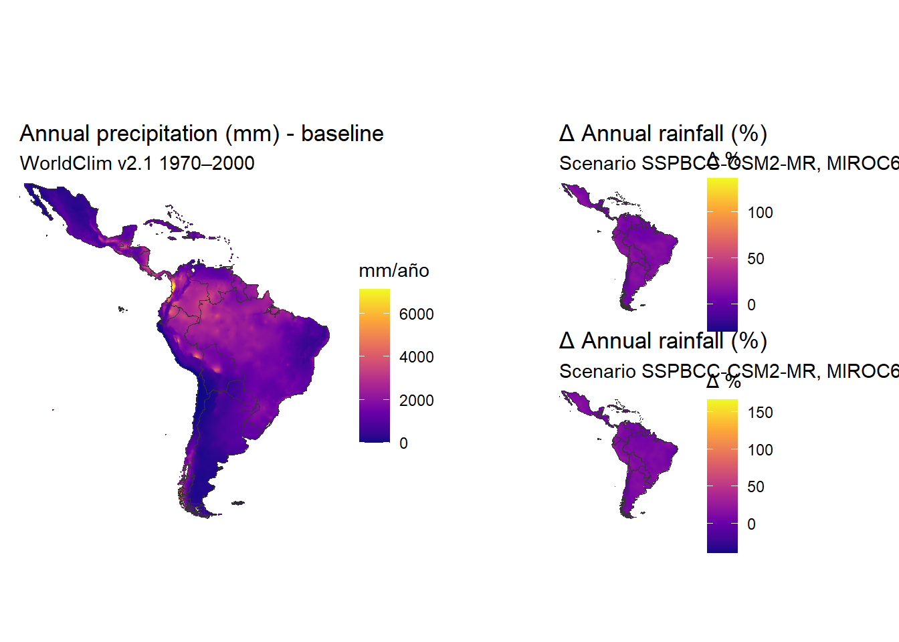

Latin America is considered among the most climate-vulnerable regions (sharing risk with Africa, Small Island Developing States, South and Southeast Asia, Middle East and the Arctic), despite the relatively small contribution to global greenhouse gas emissions of all this regions.
The particular exposure of Latin America steam from a combination of structured factors. It is a region where climate hazards have a large probability to strike. This is a result of the geographical position. It spans the tropics, subtropics, and has an extensive coastlines, so it is exposed to hurricanes (Caribbean, Central America), El Niño/La Niña–driven droughts and floods (Pacific coast, Andes, Southern Cone), and heatwaves. Some sub-regions, like the tropical Andes, depend on glaciers as a source of water supply. There are ample sub-regions with low-lying coastal lands. River deltas, mangrove coastal forest and the Caribbean islands are clearly vulnerable to sea-level rise, storm surge and erosion.
The region is biodiversity rich. Five of the 17 megadiverse countries are located here: Brazil, Ecuador, Mexico, Peru and Venezuela. There are worldwide unique and fragile ecosystems located in the region. Some of them of global relevance: Amazon rainforets, Coral reefs, mangroves, páramo andino and tropical dry forest are widely recognized for its role in Holocene biosphere. The biocultural binding is strongly preserved in the region, making local livelihoods rely on these ecosystems for food, water, and raw materials.
But Latin America is also vulnerable because of socio-economic hardships. Inequity and poverty are widespread and pervasive, making difficult for people to cope with disasters. It is estimated that climate shocks push million into poverty or food insecurity. Cities grow through pattern of informality. This means that settlements are common to spread into floodplain, hillside or heat-prone territories. Related to all these, is the heavy economic and livelihood dependency on agriculture which makes food climate-dependent and spreads the human impact to wildlife and fisheries.
Therefore, Latin America an the Caribbean can be regarded to have a high physical exposure to climate change, has a global ecological importance. The human population in the region has economic dependence on climate-sensitive sectors, and social inequality provoke a state of “double vulnerability”: high sensibility to the impacts of climate change and limited adaptive capacity. A current state of perceived effects can be summarized as ilustrated in Table 1. Expectations are that these effects will keep increasing.
In paticular there is concensus that some tipping points could be near, if not already reached. For instance in the Amazon, if deforestation continues, large parts may shift to drier savanna-like systems, disrupting continental water cycles. Another wide consensus is that impacts are already visible and accelerating (heat, drought, floods, crop losses, zoonotic disease spread are increasing).
| Concept | Identified effect |
|---|---|
| Climate patterns | Average temperatures have risen; heatwaves are more frequent. Rainfall patterns are shifting: some areas are drier (more droughts), others have heavier rains. |
| Extreme events | Stronger and more frequent floods, droughts, wildfires, hurricanes, and intense storms. 2024 saw major hurricanes, floods, and droughts across the region. |
| Water resources | Andean glaciers are retreating rapidly, reducing dry-season water supply for drinking, irrigation, and hydropower. |
| Ecosystems | Amazon deforestation disrupts rainfall cycles and “flying rivers” (moisture flows). Coastal ecosystems (mangroves, reefs) suffer from sea-level rise and acidification. Species loss and species range shifts are already occurring. |
| Food security | Yields are falling in some crops due to heat and rainfall variability. Fisheries are stressed by ocean warming and acidification. Extreme events increase hunger risk in vulnerable populations. |
| Zoonosis | More mosquito-borne diseases (dengue, zika, chikungunya). Heatwaves raise mortality and stress health systems. Many areas lack infrastructure to cope with heat or disasters. |
The patterns of climate change in terms of average temperature and rainfall are shown in ?@fig-mapas. The base line values were calculated for the period 1970-2000. A projection to near future labeled as “2030” wzs calculated using data for the period 2021-2040.

